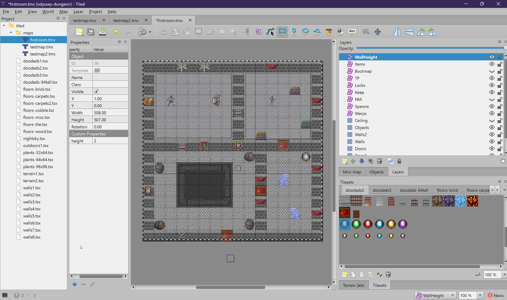
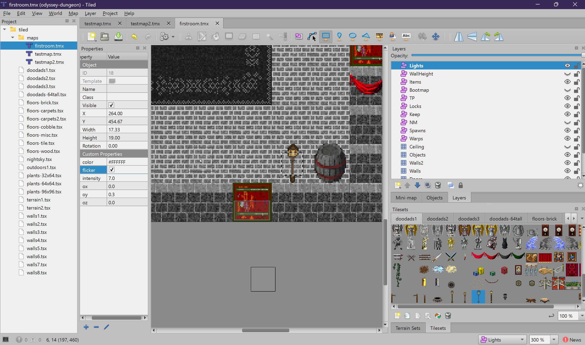
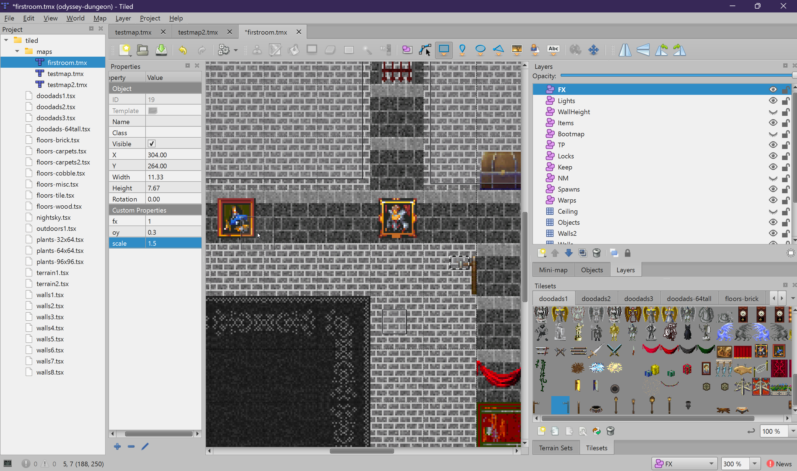
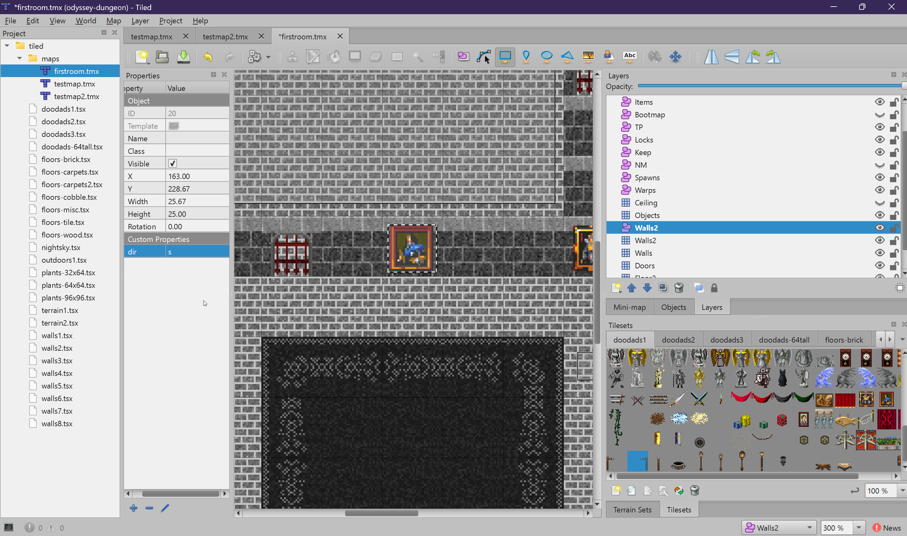

Advanced Topics
Roofs, variable wall heights, point lights, particle effects, and directional wall overlays.
This chapter covers advanced features that let you create more complex and visually rich maps. These features all use object layers with custom properties to control geometry and effects that go beyond simple tile painting.
Roof System
The roof system uses two layers with the same name — a tile layer for texture and an object layer for geometry. Together, they create sloped roof structures above your buildings.
Step 1: Roof Tile Layer
Create a Tile Layer named Roof. Paint tiles from a roof-appropriate
tileset (e.g., terrain2.tsx) wherever the roof surface should appear. These tiles
provide the texture that will be mapped onto the sloped geometry.
Step 2: Roof Object Layer
Create an Object Layer also named Roof. Draw rectangles that
define the area each roof section covers. Each rectangle generates a 3D roof shape.
Roof Object Properties
| Property | Type | Default | Description |
|---|---|---|---|
roof_dir |
string | (auto) | Ridge direction: "ns" (north-south) or "ew" (east-west). If not set, auto-detected from rectangle shape (wider = ew, taller = ns). |
roof_angle |
float | 45 |
Slope angle in degrees. 45 gives a steep roof, lower values give a gentler slope. |
hip |
bool | false |
If true, creates a hip roof (slopes on all 4 sides). If false, creates a gable roof (slopes on 2 sides, with triangular walls on the ends). |
How Roof Geometry Works
- The roof starts at the eaves, which sit at the top of the walls within the region (eaves Y = wall height * 2)
- The ridge runs along the center of the rectangle in the specified direction
- The peak height is calculated from the slope angle and the distance from edge to center
- Gable roofs have two sloped sides and flat triangular walls on the short ends
- Hip roofs have slopes on all four sides, meeting at a ridge (or a point, if square)

Variable Wall Heights
By default, all walls are 1 tile tall (spanning 2 world units from Y = -1 to Y = 1).
The WallHeight object layer lets you make walls taller in specific regions —
perfect for towers, cathedral walls, fortress battlements, or cliff faces.
Properties
| Property | Type | Default | Description |
|---|---|---|---|
height |
int | 1 |
Wall height in tiles. A height of 2 means walls span from Y = -2 to Y = 2 (4 world units tall). |
How to Use
- Create a
WallHeightobject layer - Draw a rectangle over the area where you want taller walls
- Set the
heightproperty to the desired value
Things to Keep in Mind
- Only affects
Wallslayer tiles within the rectangle - The wall texture tiles vertically with the height increase
- If you increase wall height, you should also increase the
Ceilinglayer height to match (otherwise walls poke through the ceiling) - Roof eave heights are based on wall heights, so roofs automatically adjust to taller walls

Point Lights
The Lights object layer lets you place point light sources that illuminate
surrounding walls, floors, and objects. Lights are essential for indoor and dungeon maps
where the ambient light is low.
Properties
| Property | Type | Default | Description |
|---|---|---|---|
intensity |
float | 5.0 |
Light brightness and range. Higher values illuminate a larger area. |
color |
string | #FFFFFF |
Hex color of the light. Examples: #FF8800 (warm orange), #4488FF (cool blue). |
ox, oy, oz |
float | 0 |
Position offset from the object's center, in world units. oy offsets vertically (default Y position is 1.0). |
flicker |
bool | false |
Enables a flickering animation, simulating fire-based lighting (torches, candles, campfires). |
Lights on Objects
In addition to the Lights object layer, you can attach lights directly to tiles on
the Objects tile layer using tile properties (light_intensity,
light_color, etc.). This is useful for tiles that inherently emit light —
like a torch sprite that automatically comes with a warm, flickering light.
See Tile Layers: Objects for the tile property names.

Particle Effects (FX)
The FX object layer places particle effects on the map — fire, smoke,
magical sparkles, steam, and other animated visual effects.
Properties
| Property | Type | Default | Description |
|---|---|---|---|
fx |
int | (required) | Particle effect ID. Must match an effect defined in the game's particle effect system. |
ox, oy, oz |
float | 0 |
Position offset from the object center, in world units. |
scale |
float | 1.0 |
Scale multiplier for the effect. 2.0 = double size, 0.5 = half size. |
FX on Objects
Like lights, particle effects can also be attached to Objects tile layer tiles
using tile properties (fx, fx_ox, fx_oy, fx_oz,
fx_scale). This is ideal for objects that always have an effect — like a
campfire tile that automatically spawns fire particles.

Walls2 Direction Control
The Walls2 object layer (distinct from the Walls2 tile layer)
controls which faces of Walls2 tiles are visible. By default, all four faces (north, south, east, west)
are rendered. This layer lets you restrict rendering to specific faces.
Why Is This Useful?
Consider a wall-mounted torch. If all four faces are rendered, you would see the torch texture on every side of the tile — including the side facing into the wall, which is invisible and wastes rendering effort. By restricting to just the face pointing away from the wall, the decoration looks correct.
Properties
| Property | Type | Default | Description |
|---|---|---|---|
dir |
string | All faces |
Comma-separated list of faces to render. Values:
n (north), s (south), e (east), w (west).
Example: e renders only the east face. n,s renders north and south.
|
Direction Bitmask
Internally, the engine converts the dir string to a bitmask:
| Direction | Bit | Value |
|---|---|---|
North (n) | 0 | 1 |
South (s) | 1 | 2 |
East (e) | 2 | 4 |
West (w) | 3 | 8 |
Default (no Walls2 object layer): all faces = 0xF (15).
How to Use
- Place decoration tiles on the
Walls2tile layer - Create a
Walls2object layer - Draw a rectangle over the tiles you want to control
- Set the
dirproperty to the faces that should be visible
dir to s so only the south-facing
side of the decoration is rendered.

Summary
Advanced features let you create much more detailed and atmospheric maps. Roofs give buildings proper 3D roof structures. WallHeight creates imposing towers and tall structures. Lights and FX bring the world to life with illumination and particle effects. And Walls2 direction control ensures wall decorations render correctly.
Finally, the Coordinate Reference page explains how Tiled's 2D coordinates translate to the game's 3D world — essential knowledge for debugging warps, spawns, and other coordinate-dependent features.